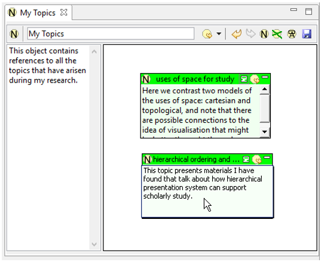

|
|
After you have used Pliny for some period of time you will find that you have hundreds or even thousands of notes. In the same way that simply dropping papers in your office anywhere makes it difficult to keep track of what you have when your collection of papers gets large, not attending to the issue of organising materials in Pliny can readily produce a collection which is unusable because it is hard to find anything.
However, the whole point of using Pliny is to assist you in keeping track and organising new ideas that come into your head. You will find Pliny to be helpful to you to the extent that you can organise things in it in ways that match your evolving set of ideas. It is important to understand that Pliny, by being an Englebartian piece of software (a word processor is "Englebartian"), does not do the organising for you. In the same way that a word processor does not write the text for you, but provides you with a mechanism that makes it easier to write; so Pliny does not organise your materials for you, but provides an environment that helps you do the job yourself. Just as some text from a word processor is still yours because the intellectual materials it presents was wholely created by you, the structures you create in Pliny as you work over your materials are yours because you created them. Indeed, I suggest that you begin to think of how to manage your notes early in your use of Pliny rather than later.
The first thing to understand here is that the key object to help you organise things is, perhaps surprisingly, the Pliny Note. Although the Pliny note is used in annotation because it provides a space for a bit of annotation text, like all Pliny resources a note also has a 2D reference space attached to it -- and the more that space is featured as the centre of attention in any particular Pliny note, the more likely it will be that the note itself was not created simply as an annotation to something else, but instead is a principal organising object within your collection. We have, in fact, already started this process when the "uses of space for study" object was created in the previous tutorial using Pliny to organise notes.
A second key element in Pliny that supports the development topics of interest is that Pliny objects appear on a 2D space as a reference. This means that the same object can appear in more than one place, and this ability to have the same object appear in more than one contexts is very useful during the task of representing in Pliny a developing interpretation. The following figures illustrates this schematically:
The figure shows three stages of research in the yellow boxes. The first stage -- reading -- is shown at the left end, and you see here represented 3 pieces of reading, with annotations attached to each of the three readings. The second stage -- interpretation development -- is represented in the middle area. There you see two topics represented as a Pliny-like 2D space. In a real use of Pliny you are likely to have many more "topic" items than just two. Reference objects appear in both these two topics, and some of them are references to notes that were originally created as annotations to the readings (the two-direction arrows are meant to show that the same note appears in both places). Finally, the "writing" area on the right shows Pliny helping in the preparation of two papers. Here the user is assembling materials that are relevant to the papers s/he is planning. Some of these are new objects, some are references to notes that were annotations made during the reading (created in the left column), and some are references to topics developed during interpretation, and represented in the diagram in the middle column.
Note the recontextualising that is going on here. The topmost object in Paper 1 is the same item as the top item in Topic 1, and was originally created as an annotation to the third paper. Similarly, the 2nd item in Paper 1 is a reference to Topic 2. It is in the constructing of objects that support reading (annotations), that support interpretation development (topics), and support paper writing that Pliny assists you to develop your ideas and eventually turn them into materials for publication.
Any formal system for modelling materials of course limits the kinds of organisational strategy you can use -- however, I have created the model that Pliny uses to store your notes in a way that is quite flexible. Thus, Pliny does not impose a particular approach that you must take to organise your material -- that is your business too. Indeed, you could use, simultaneously, two or more different strategies to organise things if that seemed to be useful to you. In this tutorial I will suggest an approach that I have found helpful, but you might well find that quite a different approach could used effectively if it suits your purposes better.
As the figure above suggests, the basic idea in the structuring model I propose is centered around the idea of a "topic". The "uses of space for study", built in the previous tutorial, is a topic, and you might have already used Pliny notes to organise more than one topic like this. There is no formal object in Pliny called a "topic" -- instead the 2D reference space in a Pliny note object can be used to store information about a topic and help you manage it.
If you wish to organise your materials into a set of interesting topics, then you need a place to collect the topics themselves. Hence, the need for an object called "My Topics" in which references to all your topics are stored. My Topics can best be managed as an instance of a Pliny Note. Since the plan is to have all the topics that interest you collected together on it, this My Topics note is likely to be one of the major ways into your topic collection, so it makes sense to also have it as one of your Bookmarked objects.
To create the note for My Topics, click on the New Note icon
 in the top right corner of the
Resource Manager:
in the top right corner of the
Resource Manager:
Pliny will respond, as usual with the New Note wizard:
Of course, you have used this form before, and have seen the New Note Information box several times already, so this process to create notes is not new. Note how it has been filled in to create the My Topics note object above:
By ticking the "Add to Bookmark List" item we ensure that the new object is immediately put in the My Bookmarks list in the Resource Explorer, and, therefore, always available for quick access from there in the future.
When the Finish button is clicked, the new note called My Topics is created, and displayed. As usual, the My Topics note editor starts off by dividing its display area in two equal sized halves. For this note the focus will be on the 2D space, so it is a good idea to move the boundary between the textual context and the 2D space to the left, to increase the size of the 2D area. It is also useful to use the textual content area as the place for a brief note explaining what this "My Topics" object is. After doing these two things the screen will look like this:
Now that we have a space (to the right) to hold references to the topics that have been created, we need to put references of them on it. For instance, to add a reference to uses of space for study, one could look it up in the Resource Explorer, and then drag the icon that refers to it to My Topic's reference area, as shown here:
When you complete the dragging operation and release the mouse button, a reference to uses of space for study will be added to the spot in the 2D area where you placed it:
You would repeat the above steps, adding other topics you have already created to the My Topics page until all your pre-existing topics were included.
Now that we have a My Topics note to hold references to topics of interest, we can simply create notes to store new topics on My Topics itself whenever a new topic emerges. Suppose, for instance, a new topic "hierarchical ordering and study" emerges. First, we create a new note on the My Topics area, then we name it appropriately. The new note has become the one for the new topic, and we can type in a bit of text to remind us what the object contains:

To actually start adding materials to the new topic we would need to
open it. The easiest way to do this is to double-click on the
 that appears in the top left
corner of its reference here. Having done this, the note we just created is
opened in Pliny's note editor, and we are ready to begin adding materials to
it. Observe that the text we type into the note's reference object in My
Topics appears in the textual content area:
that appears in the top left
corner of its reference here. Having done this, the note we just created is
opened in Pliny's note editor, and we are ready to begin adding materials to
it. Observe that the text we type into the note's reference object in My
Topics appears in the textual content area:
This is going to be a "topic" note, so we can expect to need more space for its 2D reference area, and less space for the display of the textual area. You can, as always, drag the boundary between the two areas to the left to make the reference area larger. Then you are ready to add materials about is new topic to its reference area.
 |
| Pliny Help Pages by John Bradley are licensed under a Creative Commons Attribution-Noncommercial-Share Alike 2.0 UK: England & Wales License. |